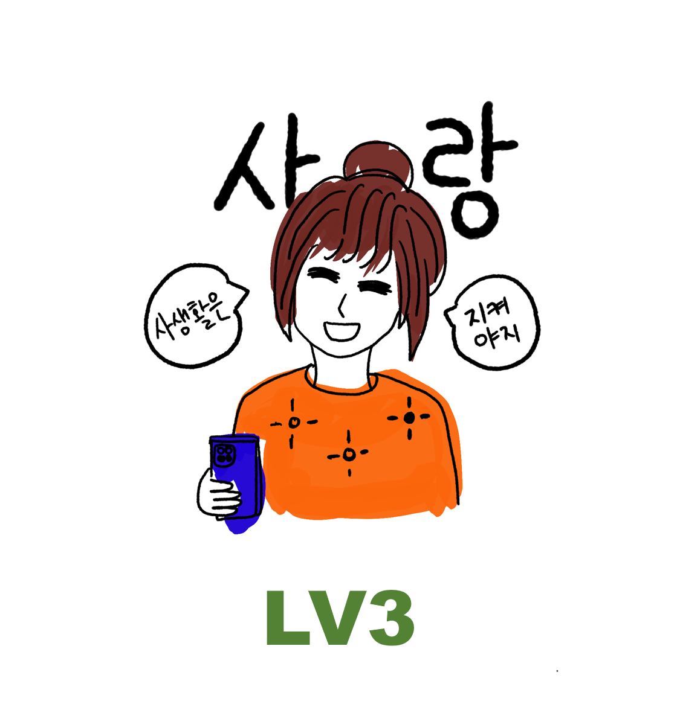

당신의 연애 유형은
방목형 LV3

자신의 생활이 최우선, 가끔 연애중인데 요즘 만나고 있어? 라는 이야기를 종종 듣기도 한다. 나의 앞길에 연애가 방해가 된다면 과감하게 이별을 말할 수 있는 스타일.
현재 애인이 있다면 현재의 내 생활이 즐겁고 이런 정도로 만나는 것에 충분히 만족하고 잘 지내는 중. 이렇게 편한 연애를 할 수 있는 상대가 또 없을 것이라고 종종 생각한다. 연인이 오랜 기간 해외여행을 떠난다고 해도 별 타격없이 잘보내줄 수 있을 정도의 내공을 보유한 스타일.
가끔 애인에게 보고 싶다고 투정을 부리거나, 집에 간다고 할 때 한번씩 가지말라고 잡아보자. 좋아서 눈이 커지는 애인의 모습을 볼수 있을 것이다.